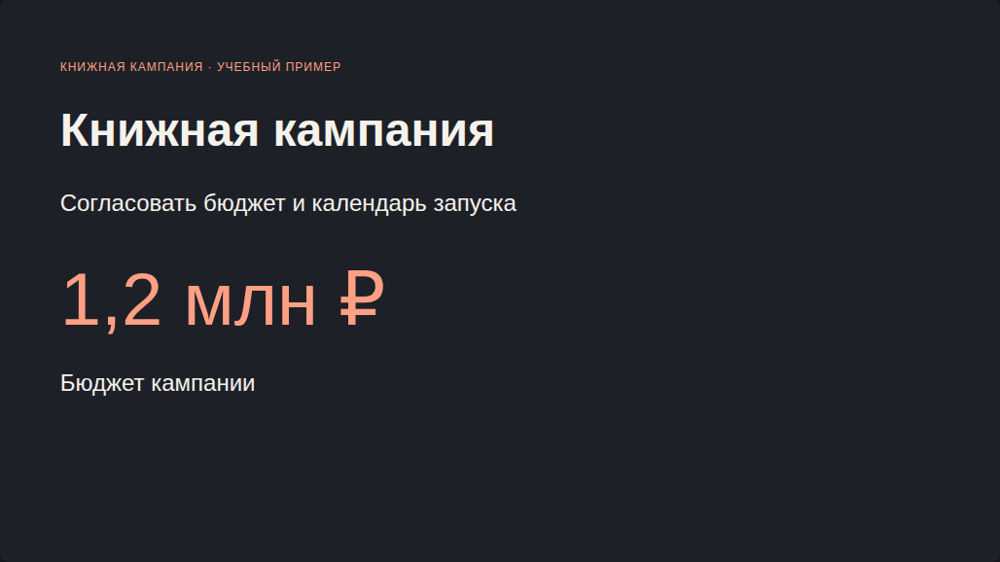

1. Показать предложение как HTML-презентацию
Руководителю нужно согласовать бюджет книжной кампании. Начнём с четырёх слайдов, которые открываются в браузере.
Этот кейс в презентации ↗Результат: автономный HTML с навигацией. Все данные — учебные.
Создай презентацию в виде одного автономного HTML-файла: 4 слайда 16:9, русский язык, тёмный фон #1e2027, акцент #ff9f83. Задача руководителя — согласовать бюджет и дату книжной кампании. Учебная книжная кампания: магазины — 2400 экземпляров, маркетплейсы — 3600, цифровой канал — 4000. Итого 10000. Бюджет 1200 тыс. ₽: реклама 600, контент 300, мероприятия 180, резерв 120. Старт продвижения 15.10.2026, длительность 14 календарных дней. Слайды: решение; продажи; бюджет; следующий шаг. Добавь кнопки Назад/Далее, стрелки клавиатуры, счётчик и печать всех слайдов. Без CDN, внешних шрифтов, картинок и сетевых запросов. Один главный вывод на слайд; никаких выдуманных фактов. Верни полный HTML. Если интерфейс поддерживает предпросмотр HTML, открой его.
- Откройте DeepSeek и отправьте промпт.
- Если рядом с HTML есть запуск или предпросмотр, откройте его.
- Если предпросмотра нет, сохраните полный код без ограждений Markdown как presentation.html и откройте файл в браузере.
- Проверьте кнопки, клавиатуру и печать всех слайдов.

Пример результата в браузере. HTML-файл можно открыть и изучить независимо от сервиса.
Открыть примерСкачать HTML2. Получить редактируемые Google Презентации
Когда коллегам нужно менять текст и расположение блоков, создайте нативные слайды через Google Apps Script.
Этот кейс в презентации ↗Напиши полный Google Apps Script с функцией createBookCampaignPresentation(). Создай новый файл через SlidesApp.create, не меняй существующие. Четыре слайда: решение, продажи, бюджет, следующий шаг. Учебная книжная кампания: магазины — 2400 экземпляров, маркетплейсы — 3600, цифровой канал — 4000. Итого 10000. Бюджет 1200 тыс. ₽: реклама 600, контент 300, мероприятия 180, резерв 120. Старт продвижения 15.10.2026, длительность 14 календарных дней. Используй нативные текстовые блоки, пустой макет, пропорциональные отступы от getPageWidth/getPageHeight. Фон #1e2027, акцент #ff9f83, текст #f5f2ec. Покажи ссылку через Logger.log и верни URL. Удали только начальный пустой слайд нового файла после добавления остальных. Без внешних API и библиотек. Дай краткую инструкцию запуска.
- Откройте script.google.com и создайте проект.
- Замените содержимое Code.gs кодом из файла ниже.
- Выберите createBookCampaignPresentation и нажмите «Выполнить».
- Разрешите доступ к презентациям в своём аккаунте.
- Откройте ссылку из журнала выполнения.
Фрагмент: заголовок на слайде
Код создаёт новый файл при каждом запуске. Предыдущие презентации остаются на месте. Для повторного эксперимента используйте новый файл, а не рабочую презентацию коллег.
Apps Script — JavaScript для сервисов Google. Нативные текстовые блоки можно редактировать после запуска.
3. Хранить содержание и структуру в одном файле
Marp превращает Markdown со структурой слайдов в презентацию. Один исходник удобно исправлять и переносить.
Этот кейс в презентации ↗Преобразуй исходные данные в Marp Markdown: front matter marp: true, size: 16:9, paginate: true; разделяй слайды отдельной строкой ---. Сохрани 14 слайдов и все факты из приложенного материала. Заголовки формулируй как выводы. Таблицы компактные, на графиках указаны единицы. Не заменяй выручку прибылью и не называй корреляцию причиной. Верни один .md без внешнего ограждения Markdown.

Первая пара --- обрамляет настройки. Следующие разделители начинают новые слайды. Символ # задаёт заголовок.
В этом экспорте Marp в PPTX слайды переданы изображениями. Для редактируемого текста используйте Apps Script или пересоздайте элементы в редакторе.
Собрать Marp локально
В VS Code установите Marp for VS Code и откройте .md. Для командной строки:
npx @marp-team/marp-cli campaign-marp-images.md --pdf --allow-local-files
Рядом с .md нужна папка diagrams с SVG. Разрешайте локальные файлы только для своих проверенных исходников.
4. Сделать числа, связи и сроки наглядными
Один тип диаграммы отвечает на один вопрос. Рядом с графиком сохраняем числа, по которым его можно проверить.
Этот кейс в презентации ↗Для приложенной книжной кампании создай шесть отдельных Mermaid-блоков: xychart-beta bar для каналов 2400/3600/4000; xychart-beta line для недель 1600/2200/2800/3400; pie для бюджета 600/300/180/120; flowchart согласования с возвратом на правки; sequenceDiagram ролей; gantt для календаря из CSV. Используй русские подписи и единицы. Для Ганта dateFormat YYYY-MM-DD, дни календарные, todayMarker off. Не добавляй данные и не округляй суммы. Рядом с каждым блоком укажи контрольное значение.
Меняйте код, затем нажимайте «Построить». При ошибке старое изображение не выдаётся за новый результат.
Поддержка Mermaid зависит от редактора и версии. Для предсказуемого переноса отрисуйте код в SVG или PNG и вставьте изображение. Исходный код сохраните для правок.


5. Собрать презентацию в GigaChat
Передайте сервису структуру и факты. Затем проверьте файл, а не только ответ чата.
Этот кейс в презентации ↗Используй приложенный Marp Markdown как источник содержания. Создай презентацию из 14 слайдов в исходном порядке. Сохрани заголовки, числа, единицы, таблицы и учебный характер данных. Не дополняй факты. Mermaid-блоки нужно превратить в диаграммы, а не оставить кодом. Если какой-то тип не поддерживается, явно перечисли его в ответе и используй приложенное изображение соответствующей диаграммы. Не вставляй служебный отчёт о преобразовании на слайды. Контроль: 10000 экземпляров; выручка 4620 тыс. ₽; бюджет 1200 тыс. ₽; доли 50/25/15/10%; запуск 15.10.2026, продвижение 14 календарных дней. Верни сам файл презентации, если выбранный режим умеет создавать файлы, и ссылку на него. Если доступен только текстовый ответ, не называй его готовым файлом.
- Войдите в аккаунт и выберите доступный режим создания презентации или файлов.
- Прикрепите исходник либо вставьте его текст вместе с промптом.
- Если получился только план, попросите создать файл в поддерживаемом режиме.
- Откройте результат: сверяйте таблицы, диаграммы, сроки и порядок слайдов.
Возможность текстовой модели написать Mermaid не означает, что интерфейс превратит его в диаграмму. Если код остался текстом, используйте SVG/PNG из раздела выше.
6. Перенести материал в Gamma
Импортируйте тот же исходник, чтобы сравнить оформление и сохранность данных.
Этот кейс в презентации ↗Используй приложенный Marp Markdown как источник содержания. Создай презентацию из 14 слайдов в исходном порядке. Сохрани заголовки, числа, единицы, таблицы и учебный характер данных. Не дополняй факты. Mermaid-блоки нужно превратить в диаграммы, а не оставить кодом. Если какой-то тип не поддерживается, явно перечисли его в ответе и используй приложенное изображение соответствующей диаграммы. Не вставляй служебный отчёт о преобразовании на слайды. Контроль: 10000 экземпляров; выручка 4620 тыс. ₽; бюджет 1200 тыс. ₽; доли 50/25/15/10%; запуск 15.10.2026, продвижение 14 календарных дней. Сохрани исходный текст без перефразирования и не объединяй слайды. Стиль спокойный, деловой: тёмный фон, один коралловый акцент. После импорта проверь, какие графики редактируются как данные, а какие стали изображениями.
- В Gamma выберите импорт или создание из текста.
- Вставьте содержимое Marp и попросите сохранить текст и порядок. Если .md не принимается, используйте вставку текста.
- Проверьте каждый тип диаграммы отдельно: успешная схема процесса ещё не подтверждает Гант или столбцы.
- Если перенос не удался, импортируйте PPTX или вставьте готовые изображения.
Некоторые графики после импорта могут стать статичными изображениями. Если нужна правка значений внутри Gamma, пересоздайте график её средствами и внесите исходные данные.
Сравнить результаты переноса
Заполните после своего импорта. Записи сохраняются только в этом браузере.
| Что проверить | GigaChat | Gamma |
|---|---|---|
| 14 слайдов в исходном порядке | ||
| Таблица: 10 000 экземпляров, 4 620 тыс. ₽ | ||
| Столбцы: 2 400 / 3 600 / 4 000 | ||
| Линия: 1 600 / 2 200 / 2 800 / 3 400 | ||
| Круг: 50% / 25% / 15% / 10% | ||
| Схема: ветка возврата на правки | ||
| Взаимодействие: три роли и пять сообщений | ||
| Гант: старт 15.10, продвижение 14 дней | ||
| Диаграммы редактируются как данные | ||
| PDF: подписи и края не обрезаны |
На слайде с бюджетом диаграмма передана неверно. Восстанови значения: реклама 600, контент 300, мероприятия 180, резерв 120 тыс. ₽. Итого 1200; доли 50/25/15/10%. Не меняй другие слайды. Если круговую диаграмму нельзя восстановить, вставь приложенный pie.svg или pie.png, сохранив подписи.